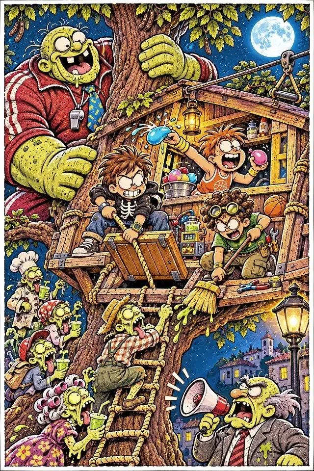
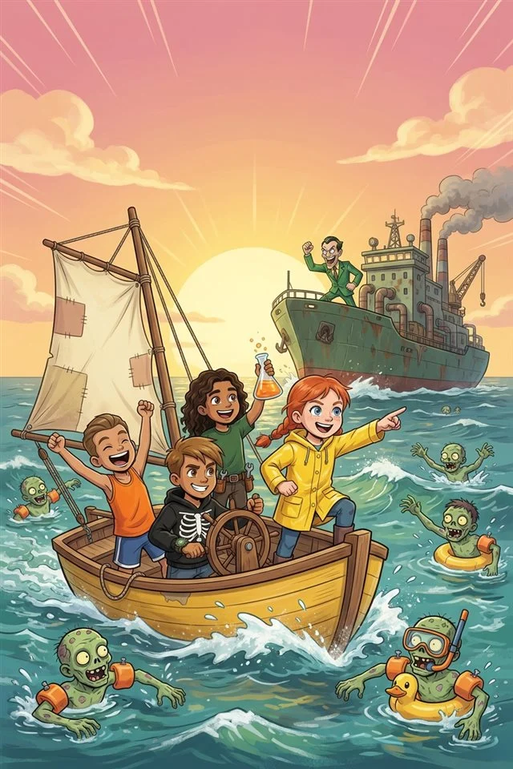
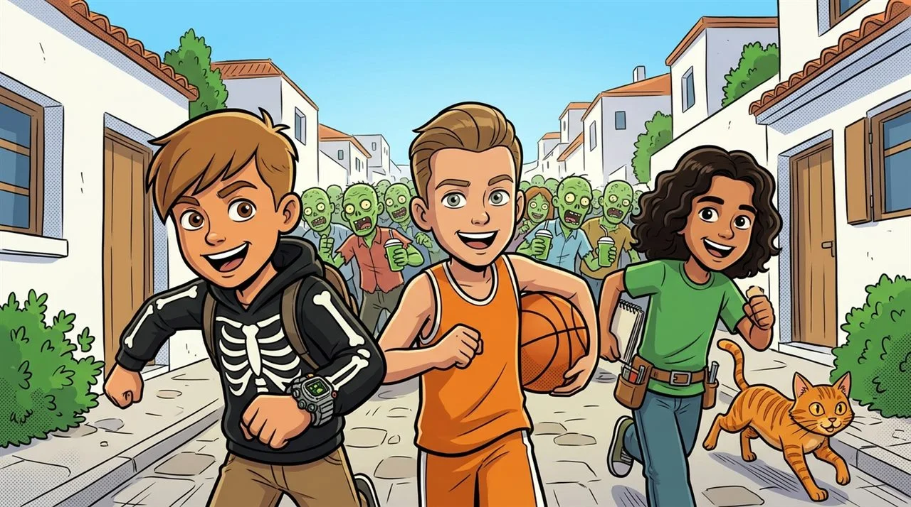

Nº1
Nº1Apocalipsis
Zombi
Librojuego gratis
Los mayores se han puesto verdes por culpa de un batido… y solo los niños pueden arreglarlo. Un librojuego donde tu peque decide.
Nº1
Nº2Asalto a la cabaña
▶ Jugar gratis
Nº3El barco del batido
▶ Jugar gratis¿Cómo se juega?
🧒 Crea tu personaje
Elige entre diez protagonistas, chicos y chicas, ponle su nombre y reparte lo que se le da bien. La historia habla de él o de ella.
🎲 Tú decides
Cada elección cambia la aventura. Y cuando toca arriesgarse, los dados dicen si sale bien… o regular.
🧠 Aprende jugando
Retos de mates, inglés y catalán en plena aventura. Si falla, el Rebobinador le deja volver a intentarlo.
🎒 Mochila y experiencia
Recoge objetos, combínalos para inventar otros nuevos, gana monedas y sube de nivel.
Para las familias

- ✅Gratis, sin anuncios y sin registro. Se juega en el navegador de la tableta o del ordenador, y también en el móvil.
- 🌍En castellano o en catalán, a elegir en la portada.
- 😄Humor, no miedo. Los zombis son vecinos que se han puesto verdes por un batido, y tienen cura. Pensado para Primaria.
- 💾El avance se guarda en tu aparato y pasa a la siguiente entrega. Si cambias de aparato, usa el 🔑 código de partida: se copia al terminar y se pega al empezar.
- 🔒No pedimos ningún dato: la partida se queda en tu aparato. Más información en la política de privacidad.
¿Le ha gustado?
Rumbo al Saber es una app para repasar Primaria en casa con el temario oficial, una voz que lee cada lección y un mundo de fantasía. La demo también es gratis.
Conoce Rumbo al Saber